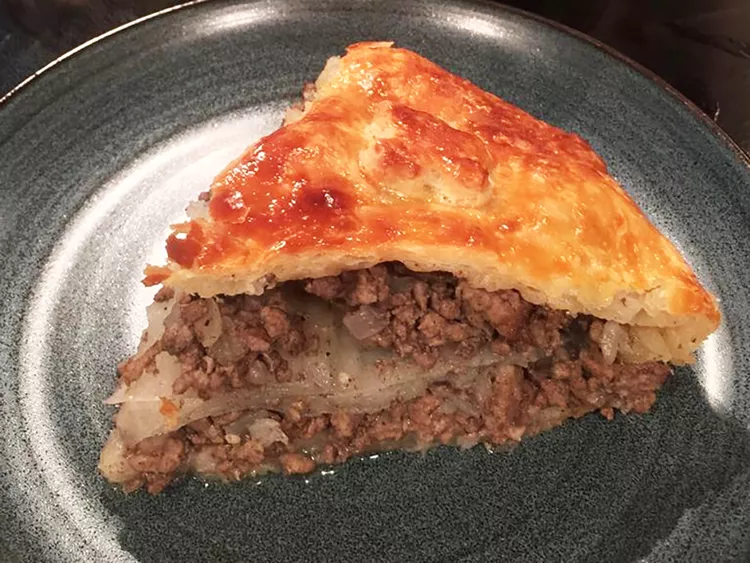

French Canadian Tourtière Recipe

Traditional French Canadian tourtière (meat pie), served on Revéillon (Christmas Eve).
Ingredients:
- 1 pound lean ground pork
- ½ pound lean ground beef
- 1 onion, diced
- 1 clove garlic, minced
- ½ cup water
- 1 ½ teaspoons salt
- ½ teaspoon dried thyme, crushed
- ¼ teaspoon ground sage
- ¼ teaspoon ground black pepper
- ⅛ teaspoon ground cloves
- 1 (14.1 ounce) package double-crust pie pastry, thawed
Directions:
- Combine pork, beef, onion, garlic, water, salt, thyme, sage, black pepper, and cloves in a saucepan. Cook, stirring occasionally, over medium heat until mixture boils. Reduce heat to low and simmer until meat is cooked, about 5 minutes. Allow to cool to room temperature.
- Preheat the oven to 425 degrees F (220 degrees C).
- Spoon meat mixture into pie crust. Cover with top crust and pinch edges to seal. Cut slits in top crust so steam can escape. Cover edges of pie with strips of aluminum foil.
- Bake in the preheated oven for 20 minutes; remove foil and return to the oven. Bake until golden brown, 15 to 20 minutes. Let cool 10 minutes before slicing.